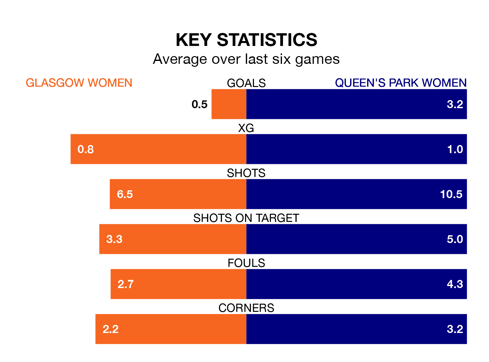

Glasgow Women host Queen's Park Women in Sunday's match at New Tinto Park looking to bounce back from defeat last time out in SWPL 2.
Glasgow, who sit seventh in the league after 23 games, fell to a 0-1 away defeat to Kilmarnock Women on April 14.
They face a Queen's Park side who picked up a win in their last match, a 6-1 victory against Stirling University Women, and who sit first in the table.
With 85 goals in 23 games so far this season, Queen's Park are the league's highest scorers with 3.7 goals per game. And they are conceding fewer than average, letting in 17 goals at a rate of 0.7 per game.
Glasgow, meanwhile, are below average scorers, with 0.9 goals per game, compared to a league average of 1.8. They have conceded 1.8 goals per game.
The hosts are in disappointing form in SWPL 2, with one win and three draws from their last six games.
With five wins and a draw over that period, the away side's form is much better – they have taken 16 points from 18, compared to Glasgow's six.
In the last 10 years, Glasgow and Queen's Park have played each other on 10 occasions. Glasgow won four of them, Queen's Park five, and they drew once.
On average, Glasgow scored 1.3 goals and Queen's Park 2.3 in those matches.
Their last meeting was on January 28, when Queen's Park won 5-1 at home.
Updated: 11:31 (UTC), 15/04/24